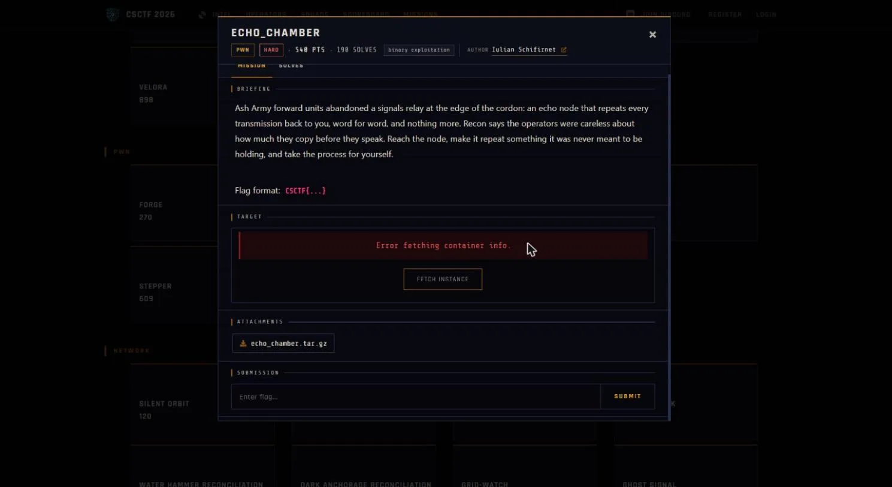

01Start point: the echo overflow and the stack frame.
- What I found: chamber() reads 0x70 bytes into an 0x50 buffer, then echoes it with printf("echo: %s", buf). The read overflows by 0x20 - exactly through the saved return address, so there is only room to pivot, not to drop a full ROP chain in one shot. The %s echo stops at the first NUL, which makes it a byte-precise leak oracle.
- What I found: frame (buf = rbp-0x50): canary @ buf+0x58, saved rbp @ buf+0x60, saved return @ buf+0x68. The chain is two-stage, defeating canary + PIE + ASLR with no good gadgets.

02Leak the canary.
- The canary's least-significant byte is 0x00, which normally terminates the echo. Overwrite just that NUL with a non-zero byte; printf then runs on and prints the remaining 7 canary bytes. Prepend the 0x00 back to recover the full canary value. "Make it repeat something it was never meant to be holding" = this leak.
03Leak the stack and the PIE base.
- Extend the same trick to buf+0x60 and buf+0x68: the echo spills the saved rbp (a stack address) and the saved return into the PIE image. pie_base = leaked_return - 0x137e.
04Leak libc (the pivot trick, because there are no gadgets but leave;ret).
- The binary has nothing useful to ROP with except a leave;ret. So: overflow to set a fake rbp pointing into main's frame (main_rbp+0x68) and return into chamber's OWN echo printf at pie+0x1332. With rbp pointed there, the printf prints [main_rbp+8] = main's saved return, which lives in libc. libc_base = leak - 0x29d90.
- Re-entering the echo printf also drops back into the read/echo loop, now reading into a known stack buffer B = main_rbp+8 whose exact address we hold.
05Pop a shell.
- Overflow B, use leave;ret to pivot rsp onto it, and run the only ROP we need: pop rdi ; ret -> "/bin/sh" -> system all resolved against the leaked libc base. Shell as the service user.
- Result: id -> uid=10001(ctf); /flag is a symlink to /tmp/flag, which carried CSCTF{Wy682FM0Dujh2fOOZ0uHXcWo}.